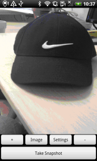

CameraDemo is a simple C++ application built with the MoSync SDK that demonstrates how to control a device's camera. It makes use of the MoSync Widget C API.
|  | ||
| Main screen, Android | Main screen, iOS/iPhone | Settings screen, Android |
Note that this example app is not included in the examples bundled with the MoSync SDK download. You can find the source code for the CameraDemo app in the MoSync GitHub repository.
There is a new Camera example app called MoCamera, which uses the new NativeUI Camera C++ API. This example is included in the MoSync SDK installation in the /examples folder.
For information on importing the examples into your workspace, see Importing the Examples.
The application makes extensive use of the MoSync Widget API. It has three different screens:
The project is divided into several files. Each screen is implemented in a separate set of header and cpp files.
The main.cpp file is the main file of the project. It includes the code for creating MainScreen.
ImageScreen.cpp contains the code for creating and handling the ImageScreen, while SettingScreen.cpp implements a class that creates and handles the SettingsScreen.
WidgetUtil.cpp contains simple wrappers for setting and getting properties of the widgets (similar to the files seen in our example application HelloNativeUI).
The .h header files contain the forward declarations for the code in the .cpp files.